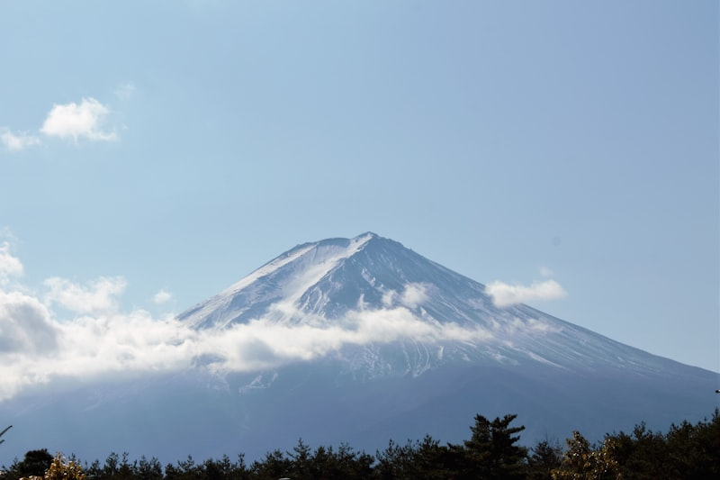
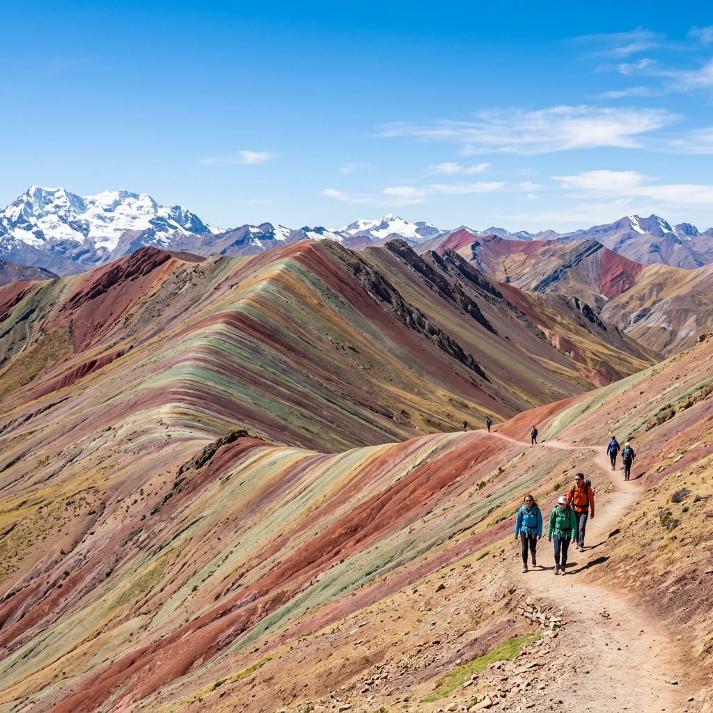
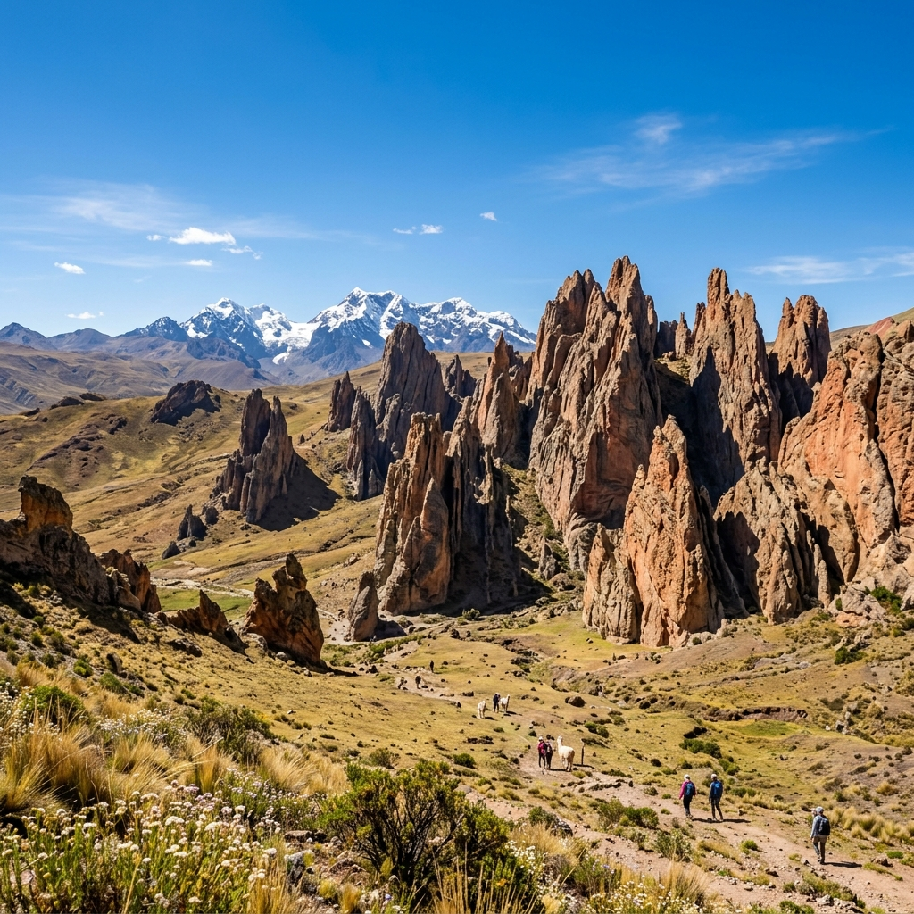
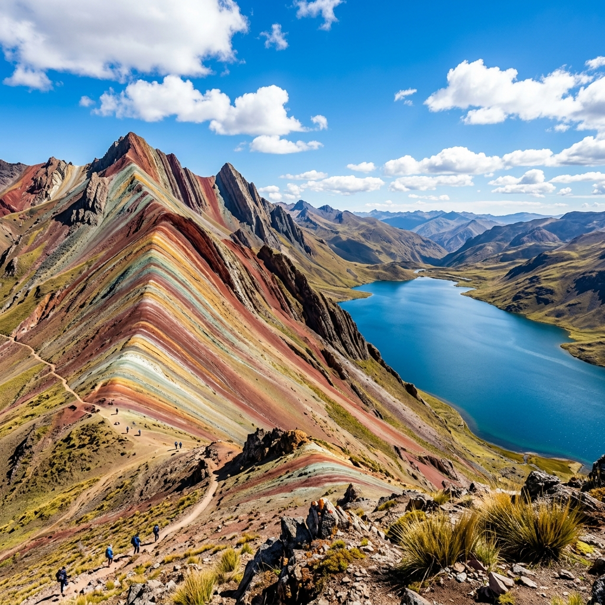
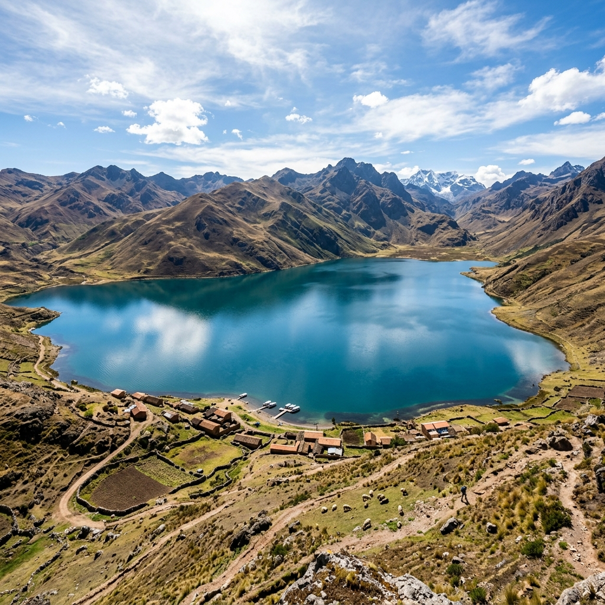
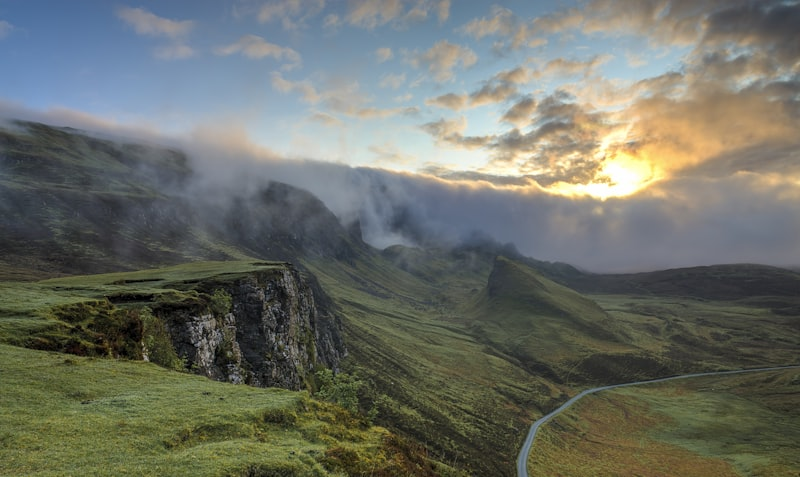
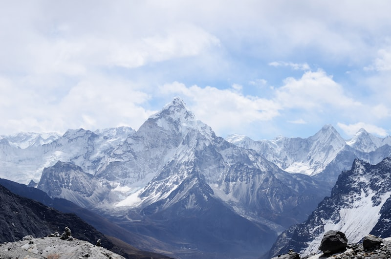

La Ruta de los Colores Andinos en Cusco: Vinicunca, Palcoyo o Pallay Punchu, ¿cuál será tu próxima aventura?
Descubre los paisajes más coloridos de los Andes peruanos.
Cusco no solo alberga la majestuosa ciudadela de Machu Picchu; también es hogar de algunos de los paisajes naturales más sorprendentes de Sudamérica.
Entre ellos destacan las famosas montañas de colores: Vinicunca, Palcoyo y Pallay Punchu, tres destinos únicos que han conquistado a viajeros de todo el mundo gracias a sus impresionantes formaciones geológicas y espectaculares tonalidades naturales.
Estas maravillas se formaron durante millones de años mediante procesos geológicos y sedimentarios que dieron origen a una increíble combinación de colores visibles actualmente.
🌈 VINICUNCA: LA FAMOSA MONTAÑA DE COLORES
Vinicunca, conocida mundialmente como la Montaña Arcoíris, es uno de los atractivos más visitados de Perú. Sus franjas multicolores son el resultado de la acumulación de minerales durante millones de años.
La caminata puede resultar exigente debido a la altitud, pero ofrece vistas espectaculares del paisaje andino y del imponente Nevado Ausangate.


Lo más destacado:
- ✅ Fotografía clásica de la Montaña Arcoíris.
- ✅ Vista del Nevado Ausangate.
- ✅ Observación de alpacas y llamas.
- ✅ Contacto con comunidades andinas.
🌄 PALCOYO: LA ALTERNATIVA MÁS TRANQUILA
Palcoyo es ideal para quienes desean disfrutar de montañas de colores sin realizar una caminata exigente. Aquí podrás admirar tres montañas coloridas y un impresionante bosque de piedras.


Lo más destacado:
- ✅ Tres montañas de colores.
- ✅ Bosque de Piedras.
- ✅ Menor afluencia turística.
- ✅ Caminata accesible.
🌅 PALLAY PUNCHU: EL TESORO ESCONDIDO DE CUSCO
Pallay Punchu es uno de los destinos emergentes más impresionantes de Cusco. Su característica forma de "poncho andino" y sus intensos colores rojizos crean un paisaje verdaderamente único.


Lo más destacado:
- ✅ Formaciones geológicas únicas.
- ✅ Vista panorámica de la Laguna Langui-Layo.
- ✅ Experiencia auténtica.
- ✅ Menor cantidad de visitantes.
📊 DIFERENCIAS ENTRE VINICUNCA, PALCOYO Y PALLAY PUNCHU
A la hora de elegir cuál de estas majestuosas montañas visitar, es importante considerar factores clave como la altitud, la exigencia física y lo que deseas experimentar durante el trayecto.

| Característica | Vinicunca | Palcoyo | Pallay Punchu |
|---|---|---|---|
| Altitud | 5,200 m | 4,900 m | 4,700 m |
| Dificultad | Alta | Baja a Moderada | Moderada |
| Afluencia turística | Alta | Media | Baja |
| Ideal para | Aventureros | Familias | Exploradores |
🎒 CONSEJOS IMPORTANTES PARA TU VISITA
Visitar destinos a gran altitud en los Andes requiere una preparación adecuada para evitar el mal de montaña y disfrutar plenamente del paisaje.

Aclimatación
Permanece al menos dos días en Cusco antes de realizar cualquiera de estas excursiones. Esto permitirá que tu cuerpo se adapte al menor nivel de oxígeno.
Lleva contigo obligatoriamente:
- ✔ Protector solar (el sol andino a gran altitud es muy fuerte).
- ✔ Casaca cortaviento y ropa de abrigo en capas.
- ✔ Agua abundante para mantenerte hidratado.
- ✔ Snacks energéticos (chocolates, frutos secos).
- ✔ Zapatos de trekking con buen agarre.
- ✔ Cámara fotográfica o celular cargado.
☀️ MEJOR ÉPOCA PARA VISITAR
La mejor época para visitar Vinicunca, Palcoyo y Pallay Punchu es entre **abril y octubre**, durante la temporada seca de los Andes.
En estos meses predominan los días soleados, las lluvias son muy escasas y los colores de las montañas lucen más intensos gracias a la excelente iluminación natural.

🏔️ VIVE ESTA EXPERIENCIA CON MUSOQ PERU EXPEDITION
En **MUSOQ PERU EXPEDITION** contamos con guías profesionales y operadores locales que te acompañarán durante toda la experiencia para que disfrutes de una aventura segura, organizada e inolvidable.

Nuestros servicios incluyen:
- ✅ Transporte turístico moderno e higienizado.
- ✅ Guías profesionales bilingües con amplia experiencia.
- ✅ Asistencia permanente durante todo el viaje.
- ✅ Experiencias auténticas y conexión local.
¡Reserva hoy tu aventura y descubre los colores más impresionantes de los Andes peruanos con MUSOQ PERU EXPEDITION! 🌈🏔️